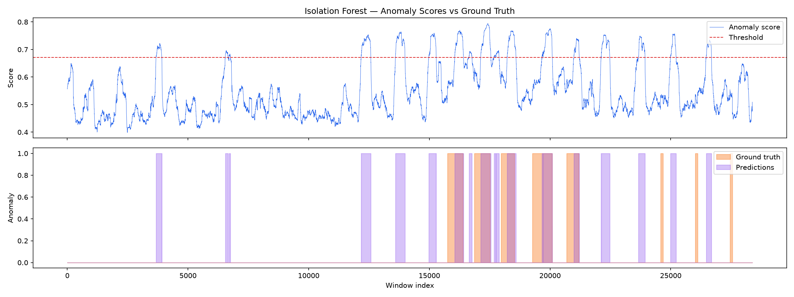
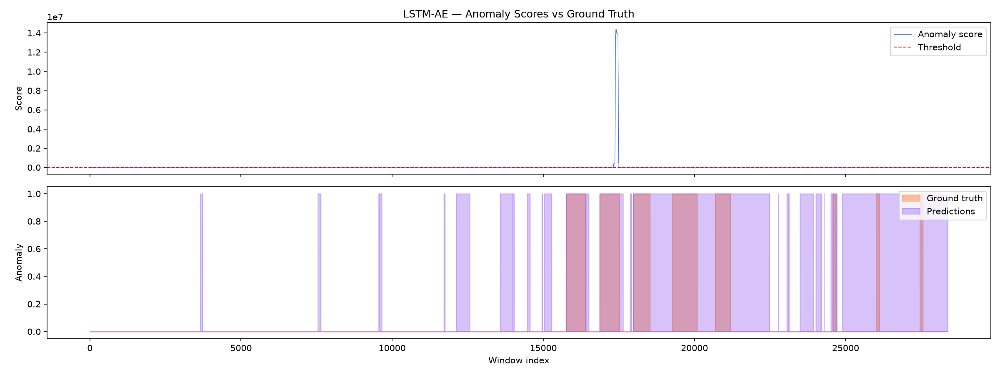

Deep Unsupervised Anomaly Detection on Complex Server Telemetry
Empirical evaluation of PyTorch Deep LSTM Autoencoders against classical Isolation Forest baselines for multivariate server infrastructure monitoring. Evaluated on 1-minute server telemetry spanning CPU, Memory, Disk IOPS, Network Throughput, and TCP Connections.
Multi-Signal Telemetry & Reconstruction Viewer
Inspect raw server metrics, deep reconstruction tracks, anomaly score distributions, and ground truth failure intervals.
CPU Utilization: Raw vs LSTM Autoencoder Reconstruction
Actual Telemetry AE Reconstruction Ground Truth IncidentAnomaly Error Signal & Decision Threshold
Reconstruction Error Threshold (99th %tile: 1.588) Triggered AlarmInteractive Threshold Tuning Simulator
Adjust the anomaly score decision threshold dynamically and observe immediate impact on Precision, Recall, and False Alarm rates.
Live Confusion Matrix
Dynamic Metric Response
In production SRE operations, Point-Adjusted F1 (0.6547) is the standard industry KPI because catching any portion of a 20-minute server degradation immediately alerts on-call engineers.
38-Dimension Feature Attribution Heatmap
Understand which specific telemetry channels contribute the highest reconstruction variance during server anomalies.
Baseline vs Deep Learning Benchmark
Comprehensive comparison between Isolation Forest (unsupervised tree ensemble) and LSTM Autoencoder on SMD machine-1-1.
| Model Architecture | Precision | Recall | Standard F1 | PA-F1 | PR-AUC | Train Time |
|---|---|---|---|---|---|---|
|
Baseline
Isolation Forest
|
0.3536 | 0.4791 | 0.4069 | 0.6547 | 0.4877 | 4.15 s |
|
Deep Learning
LSTM Autoencoder
|
0.2909 | 0.9991 | 0.4506 | 0.4509 | 0.8155 | 577.3 s |
Isolation Forest Test Score Distribution

Moderate temporal sensitivity with frequent score fluctuations across quiet intervals.
LSTM Autoencoder Test Score Distribution

Clean baseline reconstruction during normal periods and pronounced error spikes during outages.
End-to-End Deep Anomaly Detection Pipeline
Modular architecture engineered for production telemetry streams.
Telemetry Ingestion
Raw 38-dim server metrics sampled at 1-min frequency across 28 server entities.
data/raw/ServerMachineDataset
Standardization & Windowing
Standard scaling fitted on train partition with sliding window W = 100 timesteps.
src/data.py (create_windows)
LSTM Encoder-Decoder
2-Layer LSTM (H = 128) → Latent Bottleneck (D = 64) → 2-Layer LSTM Decoder.
src/models/lstm_ae.py
Reconstruction Error Engine
Mean Squared Error et = 1/W·D ∑(x − x̂)2 over sequence window.
src/train.py (_compute_scores)
Threshold & Incident Alerting
Unsupervised 99th percentile thresholding with Point-Adjusted evaluation.
src/evaluate.py
Production Code Showcase
Clean, type-annotated, modular PyTorch implementation.
# src/data.py - Scalable sliding window dataset loader
class SMDDataset(Dataset):
"""PyTorch Dataset for sliding-window telemetry tensors."""
def __init__(self, windows: np.ndarray, labels: np.ndarray = None):
self.windows = torch.tensor(windows, dtype=torch.float32)
self.labels = torch.tensor(labels, dtype=torch.long) if labels is not None else None
def __len__(self) -> int:
return len(self.windows)
def __getitem__(self, idx: int):
if self.labels is not None:
return self.windows[idx], self.labels[idx]
return self.windows[idx]# src/models/lstm_ae.py - Deep LSTM Autoencoder
class LSTMAutoencoder(nn.Module):
def __init__(self, input_dim=38, hidden_dim=128, latent_dim=64, seq_len=100, num_layers=2, dropout=0.2):
super().__init__()
self.encoder_lstm = nn.LSTM(input_dim, hidden_dim, num_layers=num_layers, batch_first=True, dropout=dropout)
self.encoder_fc = nn.Linear(hidden_dim, latent_dim)
self.decoder_fc = nn.Linear(latent_dim, hidden_dim)
self.decoder_lstm = nn.LSTM(hidden_dim, hidden_dim, num_layers=num_layers, batch_first=True, dropout=dropout)
self.output_fc = nn.Linear(hidden_dim, input_dim)
def reconstruction_error(self, x: torch.Tensor) -> torch.Tensor:
recon = self.forward(x)
return torch.mean((recon - x) ** 2, dim=(1, 2))# src/models/iforest.py - Isolation Forest with Summary Statistics
class IForestDetector:
def __init__(self, n_estimators=200, contamination="auto", feature_mode="summary", random_state=42):
self.model = IsolationForest(n_estimators=n_estimators, contamination=contamination, random_state=random_state)
self.feature_mode = feature_mode
def _extract_features(self, windows: np.ndarray) -> np.ndarray:
# Computes mean, std, min, max per window (N, 38*4) = (N, 152)
mean = np.mean(windows, axis=1)
std = np.std(windows, axis=1)
mins = np.min(windows, axis=1)
maxs = np.max(windows, axis=1)
return np.concatenate([mean, std, mins, maxs], axis=-1)# src/evaluate.py - Point-Adjusted Evaluation (Xu et al.)
def _point_adjust_predictions(preds: np.ndarray, labels: np.ndarray) -> np.ndarray:
adjusted = preds.copy()
in_segment = False
seg_start = 0
for i in range(len(labels)):
if labels[i] == 1 and not in_segment:
in_segment = True
seg_start = i
elif labels[i] == 0 and in_segment:
in_segment = False
if adjusted[seg_start:i].any():
adjusted[seg_start:i] = 1
return adjusted# configs/default.yaml
data:
machine_id: "machine-1-1"
raw_dir: "data/raw"
processed_dir: "data/processed"
window:
length: 100
stride: 1
lstm_ae:
hidden_dim: 128
latent_dim: 64
num_layers: 2
dropout: 0.2
training:
epochs: 50
batch_size: 256
lr: 0.001